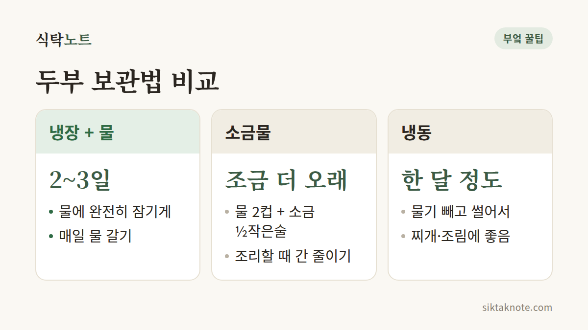

두부 오래 신선하게 보관하는 법

3줄 요약
- 남은 두부는 밀폐 용기에 담고 깨끗한 물을 잠기도록 부어 냉장해요.
- 물은 하루에 한 번 갈아 주세요.
- 오래 둘 거라면 물기를 빼고 썰어서 냉동하면 한 달 정도는 괜찮아요.

물에 푹 잠기게 담아 냉장
한 모 다 못 먹고 반쯤 남은 두부, 냉장고 구석에서 잊히기 쉽죠. 뜯고 남았다면 포장 안에 있던 물은 버리고, 깨끗한 새 물을 부어 밀폐 용기에 담아 냉장해 주세요. 두부가 물에 완전히 잠기는 게 핵심이에요.
이 물은 하루에 한 번 갈아 주는 게 좋아요. 물을 그대로 두면 오히려 두부가 빨리 쉬어 버리거든요.

소금물이면 조금 더 오래
물에 소금을 조금 풀어 두면 조금 더 오래 가요. 물 2컵에 소금 반 작은술 정도면 충분하고, 소금이 잡균이 번지는 속도를 늦춰 줘요.
더 오래 둘 거라면 냉동
물기를 빼고 먹기 좋게 썰어서 지퍼백에 담으면 돼요. 얼린 두부는 조직이 스펀지처럼 바뀌어서, 찌개나 조림에 넣으면 양념이 쏙 배어든답니다.
두부가 쉬 상하는 까닭
두부는 수분과 단백질이 많아 세균이 자라기 쉬운 식품이에요. 깨끗한 물에 잠겨 있으면 공기와 닿는 면이 줄어서, 마르거나 상하는 속도가 느려져요.
이런 신호가 보이면 버려요
물에 담가 두어도 개봉 후 2~3일 안에 먹는 게 좋아요. 시큼한 냄새가 나거나 표면이 미끈거리면 아깝더라도 버려 주세요.
소금물에 보관한 두부는 조리할 때 간을 조금 줄이고요. 물만 매일 갈아 줘도 두부가 훨씬 신선하게 오래 가요.